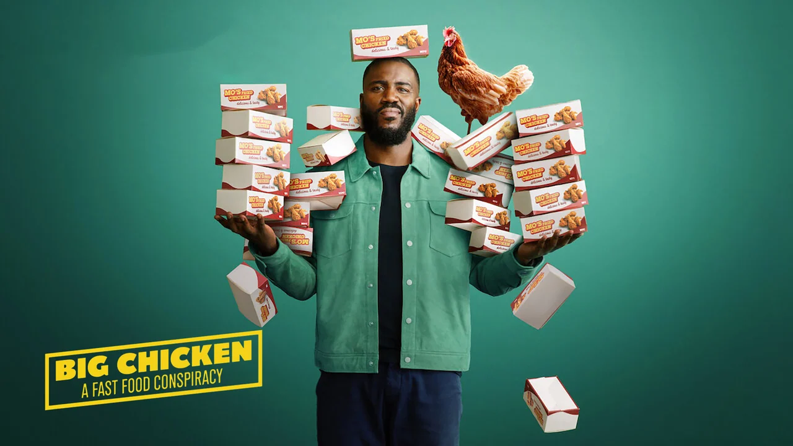

Belgesel, endüstriyel tavuk üretiminin nasıl işlediğini ve fast food zincirlerine uzanan tedarik süreçlerini inceliyor. Üretim ölçeği, halk sağlığı ve hayvan refahı üzerindeki etkileri farklı tanıklıklar ve araştırmalar üzerinden değerlendiriyor.